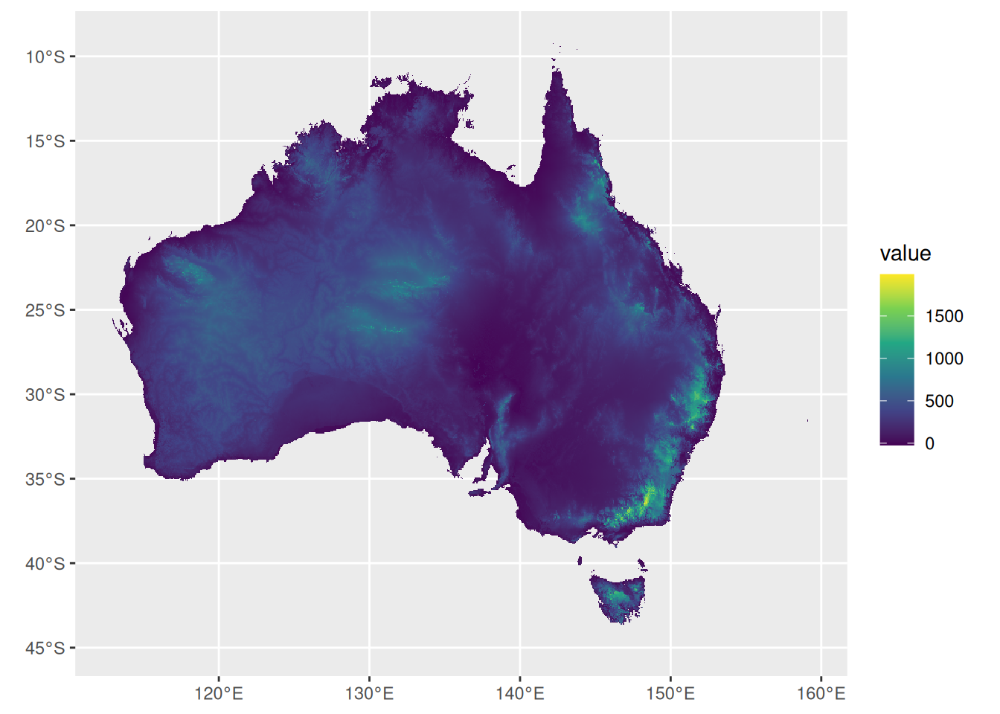
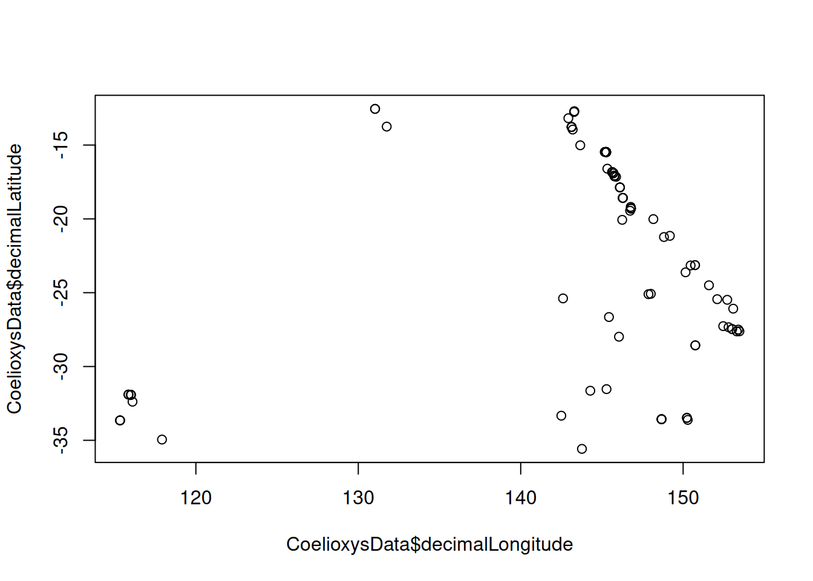
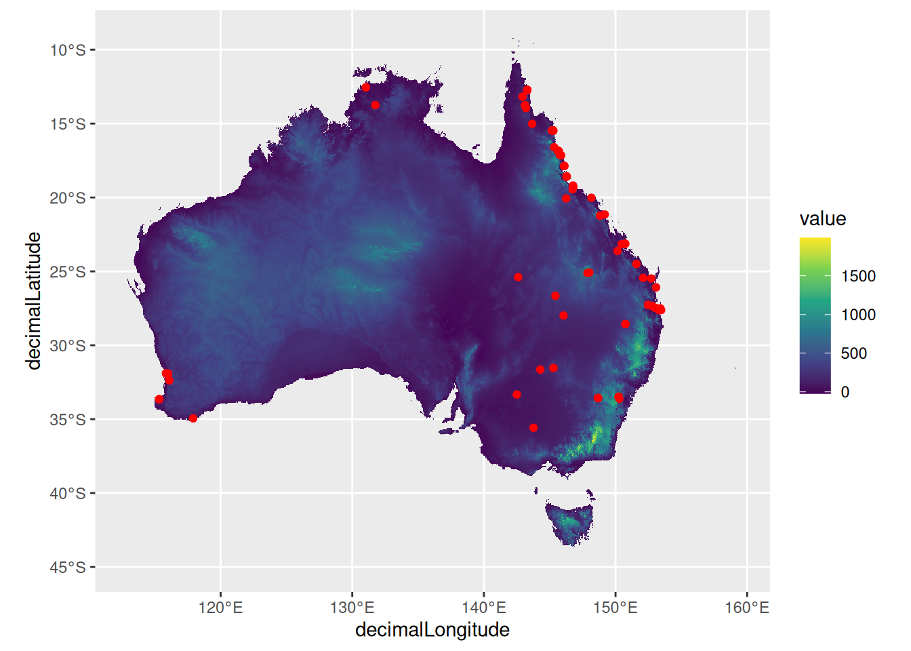
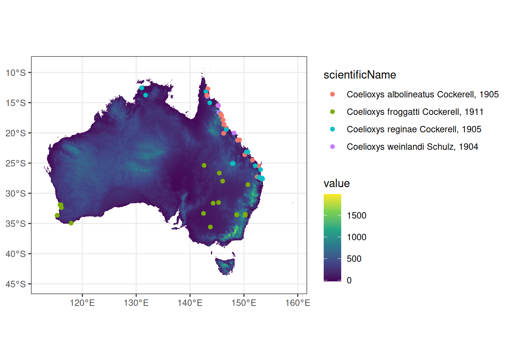

BIOL361 Prac 2 — GIS in R
Dr James B Dorey, University of Wollongong
Version 2025-02-25; practical 2025-03-31
Prac2_BIOL361.RmdAbstract
Today we will go through some geographical information system (GIS) code and analyses in R. This will involve (1) learning some GIS data basics, (2) reading in and plot GIS data, and (3) running some simple analyses.1 GIS data basics
People are often quite intimidated by working with any data, let alone specialised datasets and formats! Even Excell data formats can be scary if you’re so inclined. So, I’ll try to dispell some of your fears in this section as even “complex” data can be demistified. Much of the data that we are going to be using isn’t actually complex!
1.1 Raster and vector data
Alright, so I know that I said our data weren’t complex and then I threw two random and scary-sounding words at you. Well, don’t stress I’ll break it down and also point out that raster and vector data are also regularly used by most of us on a daily basis! In the shortest terms possible… raster data are matrices/tables of data and vector data are simply points and lines.
1.1.1 Raster data (matrices or tables)
One of the most-commonly known raster file formats would be the .jpg format. But, many others are commonly used, such as .tiff, .png, and .gif. You might be wondering “How on Earth is that a matrix or table??”. And loo, fair enough. But take a look at the below dplyr logo. This is a .png file, and if we zoom in, we can start to see the pixels which are actualyl just cells of a matrix that are filled with colour! This logo has a resolution of 240x277 (66,480) pixels.

1.1.2 Vector data (points and lines)
Vector data formats are even simpler, I think than raster data formats. Once again, you are all familiar with these formats! Probably the most-common one would be the .pdf format. But others exist like .svg and .shp. Vector file formats do not have pixels at all, which actually has some benefits. This means that we can keep zooming and zooming in on a vector file (just as we did above) and we will never see pixels!
Below, you can see a cutout of a .pdf map file which has vector data (letters, numbers, points, and lines) as well as raster data embedded (a raster map of elevation). On the left hand side you can see that we can zoom into the 18ºS and the lines without any pixels appearing. But, on the right hand side, you cna see that the lines of the map remain clear but the pixels of the map begin to appear!

1.2 Projections
This is something that is better covered in another topic, but very briefly… The earth is more or less a sphere, but quite often we want to represent this sphere on a flat surface (a map). Most of the time, if we zoom in enough this isn’t really a problem! However, the further out that we zoom the more and more problematic this is! For that reason we “project” that round map onto a flat surface. These are “Projected Coordinate Systems”.

It’s clear that these projection are visually very… diverse. This becomes a problem when you’re doing analyses or trying to make maps! In this prac we will mostly circumvent this issue by using a “Geographic [3D] Coordinate System” like WGS84 (below).

2 Script preparation
2.1 Install and load packages
Set you working directory again. This can be the same as last week’s or a new one — up to you!
# Set the RootPath to your folder
RootPath <- "/Users/jamesdorey/Desktop/Uni/Teaching/BIOL361/Lectures/2025/Github_BIOL361_25/BIOL361_25/DoreyPrac1"
# You can then set this as the project's working directory.
# This is where R will first look to find
# or save data as a default
setwd(RootPath)These are the NEW packages that we will use this week. If you have lost those from last week, go back and install them as well. Although, below we will also install some GIS packages.
install.packages("geodata")
install.packages("tidyterra")Load all of the packages from this week and last week into R.
## Loading required package: terra## terra 1.8.21##
## Attaching package: 'terra'## The following objects are masked from 'package:magrittr':
##
## extract, inset##
## Attaching package: 'tidyterra'## The following object is masked from 'package:kableExtra':
##
## group_rows## The following object is masked from 'package:stats':
##
## filter2.2 GIS in R formats and packages
Different GIS programs tend to have different file formats. ArcMap is the most cagey (as it’s a proprietary program) and so has a bunch of annoying proprietary file formats. QGIS is open source and tends to use some simpler formats (yay!). R is more-or-less able to open any of those formats and read them in (even more yay!). Let’s install the needed packages and have a very short discussion of their [preferred] formats.
“Raster data divide space into rectangular grid cells and they are commonly used to represent spatially continuous phenomena, such as elevation or the weather. Satellite images also have this data structure, and in that context grid cells are often referred to as pixels. In contrast, vector spatial data (points, lines, polygons) are typically used to represent discrete spatial entities, such as a road, country, or bus stop.”
Attention:
Annoyingly, the first time that you
use terra or sf on a new computer you
may need to install some dependencies. Try to install the
terra and sf packages first but then
come back here if that doesn’t work.
Windows:
On Windows, you need
to first install Rtools to get
a C++ compiler that R can use. You need a recent
version of Rtools42 (rtools42-5355-5357).
MacOS:
On macOS, you can use
MacPorts or Homebrew.
With MacPorts you can do
sudo port install R-terra
With Homebrew, you need to first install GDAL:
brew install pkg-config
brew install gdal
Followed by (note the additional configuration argument needed for Homebrew)
# Install terra
install.packages("terra", type = "source", configure.args = "--with-proj-lib=$(brew --prefix)/lib/")
# install sf
install.packages("sf", type = "source", configure.args = "--with-proj-lib=$(brew --prefix)/lib/")2.2.1 terra (formerly raster)
The terra package is mostly used to deal with raster data, but has some ability to work with vector data as well. (It was also formerly called raster.)
The terra package has two main data types, simply called SpatRaster and SpatVector. (along with some minor types.)
2.2.2 sf (formerly sp)
The sf, or simple feature package (formerly sp) mainly works with vector data. That’s to say that by-and-large, it works with points and lines. However, it does have some abilities to use raster as well.
By and large, sf works with data frames and
tibbles (the latter is what we make with
readr::read_csv()!). Essentially, it stores the spatial
data in an easily human-readable table!
3 Read and plot data
Okay, maybe that’s enough faffing around! There’s more to know about GIS, but this isn’t the place to learn it all. I just want to give you a brief overview of what’s possible to do in R so that in your future careers you’ll be able to do some amazing thigns for conservation biology! We have talked a lot about these data types, and now I think it’s past time to get to work with them!
3.1 Raster
We can often find raster datasets from government, non-governmental, and other websites and datasets. You can spend ages looking around online for the best possible dataset to download and apply towards a conservation goal. However, R also provides packages that can very easily and quickly read in datasets from the internet!
Below, we will use the R package geodata to download a Digital Elevation Model (DEM) os the entirity of Australia at a 30-second (~1 km) resolution.
AustralianElevations <- geodata::elevation_30s("Australia",
path = RootPath)
# View a summary of the data
AustralianElevations## class : SpatRaster
## dimensions : 4296, 5592, 1 (nrow, ncol, nlyr)
## resolution : 0.008333333, 0.008333333 (x, y)
## extent : 112.8, 159.4, -44.9, -9.1 (xmin, xmax, ymin, ymax)
## coord. ref. : lon/lat WGS 84 (EPSG:4326)
## source : AUS_elv_msk.tif
## name : AUS_elv_msk
## min value : -60
## max value : 2159How about that! Within a few seconds we have a spatRaster showing the elevatino across Australia!
Q2: Looking at the summary of AustralianElevations, (1) what are the dimensions of the file, (2) what is the coordinate reference system and is it a projected or geographic coordinate system (see “Projections” above), and (3) what are the minimum and maximum elevational values for this map of Australia?
Let’s go ahead and have a little peak at what our data looks like now
as well. Quite often you can just run terra::plot() for
your map… however, I don’t always recommend this with bigger GIS files
as they can freeze your computer. In fact, ggplot2,
with the help of tidyterra does a better job once
again!
(AusEleMap <- ggplot2::ggplot() +
tidyterra::geom_spatraster(data = AustralianElevations,
ggplot2::aes(fill = AUS_elv_msk)) +
# Feel free to remove this line (don't leave an open "+" in the previous line) and
# see what happens! "viridis" is one of MANY colour palettes available with ggplot2
ggplot2::scale_fill_viridis_c(na.value = "transparent") )## <SpatRaster> resampled to 500340 cells.
Look, I know that I’m a data nerd and all but seriously? Within a few lines of code and a few minutes we have a map of Australia that you could use in a publication or for an analysis? That’s pretty powerful stuff! BUT, an elevation map of Australia isn’t necessarrily that interesting by itself… maybe we want some species occurrence data to go with it?
3.2 Vector
So, let’s put some points on our map! Just like last week, we are going to download some data that I’ve hosted online and then read it into R.
utils::download.file(url = "https://raw.githubusercontent.com/jbdorey/BIOL361_25/main/DoreyPrac2/Australian_Coelioxys.csv",
destfile = "Australian_Coelioxys.csv",
method="curl")Okay, we have downloaded these data and you can go ahead and look in your working directory (if you’re not sure type “getwd()” into R to see where this is). Let’s go ahead and read it into R and we can also look at it once it’s read in. To do this, we will use the tidyverse package, readr.
# read in the data using readr
CoelioxysData <- readr::read_csv("Australian_Coelioxys.csv")## Rows: 102 Columns: 101
## ── Column specification ────────────────────────────────────────────────────────
## Delimiter: ","
## chr (54): database_id, scientificName, family, subfamily, genus, species, sp...
## dbl (11): decimalLatitude, decimalLongitude, startDayOfYear, day, month, yea...
## lgl (36): subgenus, subspecies, infraspecificEpithet, identificationQualifie...
##
## ℹ Use `spec()` to retrieve the full column specification for this data.
## ℹ Specify the column types or set `show_col_types = FALSE` to quiet this message.%20weinlandi_JamesDorey_Coelioxys%20sp.%2018JDEC490i%20146p%20MPE%202x.jpg)
Q2: What type of data did we just download? How many rows of data are included?
We just downloaded all of the available and quality data for the Australian bee genus, Coelioxys! These are really cool cuckoo bees that lay their eggs in the nests of other bees in the genus Megachile — just like cuckoo birds!
So, let’s go ahead and have a quick look at those data. Just to show you how simple point data really are in GIS, we could simply plot the longitude (x-axis) and latitude (y-axis) and you should be able to make out the outline of Australia just using those occurrence data! …But see how it’s kinda squished? Think back to the importance of our projection systems and how we “see” the world [on a map].
plot(x = CoelioxysData$decimalLongitude, y = CoelioxysData$decimalLatitude)
But really, we want to make a much nicer plot, with these points overlaid with Australia. So, let’s go ahead and add onto our previous ggplot2 object!
(AusEleMap_points <- AusEleMap +
ggplot2::geom_point(data = CoelioxysData,
ggplot2::aes(x = decimalLongitude, y = decimalLatitude),
colour = "red"))
See, ggplot2 is really clever! We could plot just a
regular tibble file! But, to do more complex things, we will want to
turn it into an sf simple feature format. This
is actually really easy to do! And then we don’t even need to specify
the x and y, R just knows as we use the
ggplot2::geom_sf() function now to plot the
sf date format! We could also easily group our data by
species.
CoelioxysPoints <- CoelioxysData %>%
sf::st_as_sf(coords = c("decimalLongitude", "decimalLatitude"),
# we can even match the coordinate reference system as we make our points!
crs = sf::st_crs(AustralianElevations))
# now make the map using the "sf" data points
(AusEleMap_points <- AusEleMap +
ggplot2::geom_sf(data = CoelioxysPoints,
# Colour points by species name
ggplot2::aes(colour = scientificName)
) +
# Add in a simpler theme
ggplot2::theme_bw())
Q3: How many species are in the dataset and which is most-widespread?
4 Simple analyses
Cool, so we have some raster data (DEM) and we have some vector data (points) Waht can we do with this information?! Well, one of the simplest things